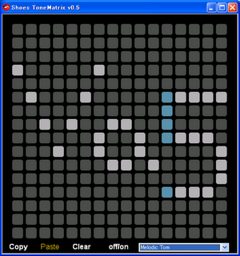

Ruby the Red Gem of Programming
This is an archived post This is an archived post
Previous
Index
Shoes Tone Matrix v0.5
June 19 2009, 12:52 PM
by Victor Goff
At last, my cup of tea is done. Released
v0.5
. Yay! :-D
# shoes_tone_matrix_snapshot_v0.5.png

Have fun,
Satoshi
44 views and 0 responses